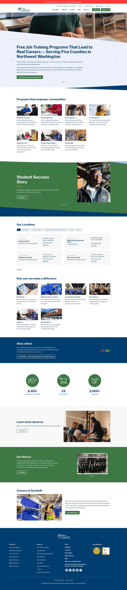
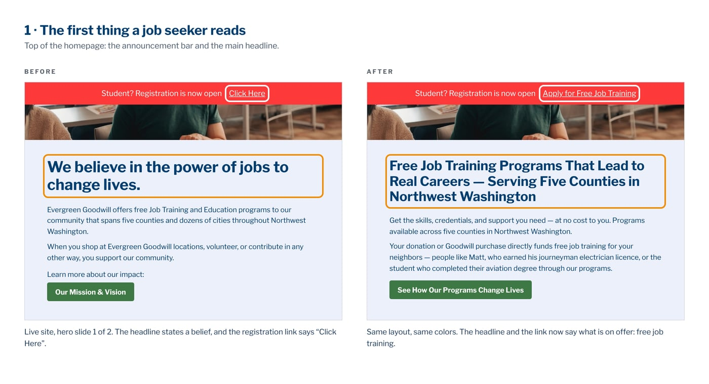
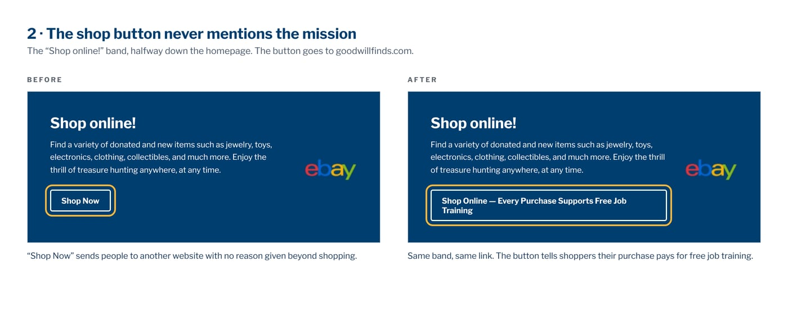
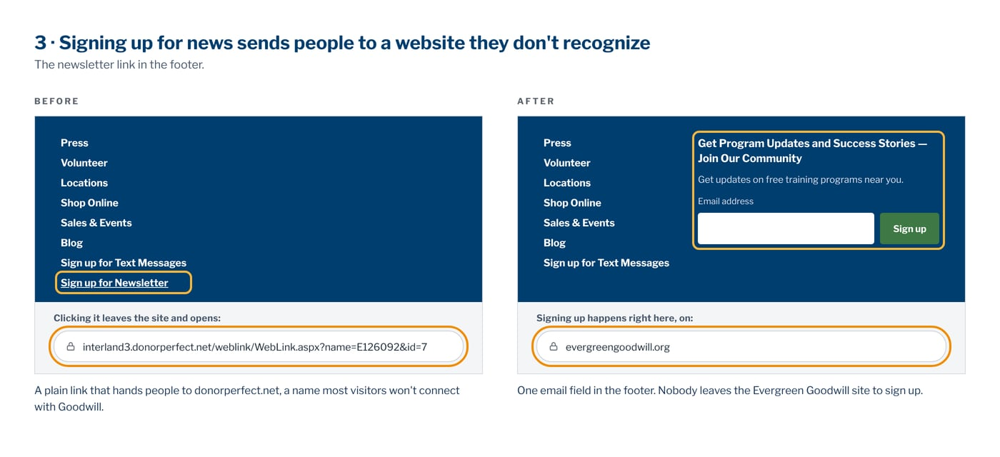
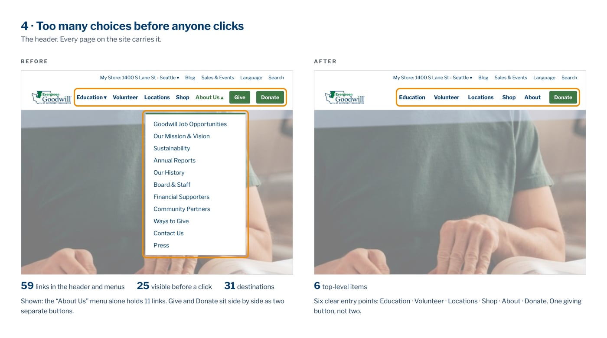

The homepage, every word fixedDays of work
Shown small here. Open it full size to read the wording.


Prepared for Amy Hanson · Evergreen Goodwill board
A conversion audit of evergreengoodwill.org, and what to do first · October 8, 2026
One axis only: how well the page turns a visitor into an enrolment, a donation or a store visit. Not a judgement of the design, the brand or the mission. 32 findings, 12 of them critical.
All 32 findings, each with what was observed on the page and the wording we would suggest instead — every one of them re-checked against the live site.
Read the full auditThe composite flatters the site, and it is worth knowing why before anyone relaxes. Evergreen Goodwill has an exceptional story and a badly built machine, and the score averages the two together.
A hundred years in Northwest Washington, 6,403 students served last year, and four graduates with names and outcomes. This half is excellent and cannot be bought.
Funnel friction scores 11 out of 100 and conversion hierarchy 29. This half is the problem, and it is the half that is straightforward to fix.
For comparison, the same audit scored hansonconsultgroup.com at 52. Evergreen Goodwill is four points higher overall and ten points worse on the machine — its story is simply strong enough to carry the average.
None of these is a matter of taste, and none needs a redesign to fix.
The main button for job seekers says “Click Here.”
It is the front door for the people the mission exists to serve, and it tells them nothing. “Apply for Free Job Training” is a five-minute edit.

The shop button never mentions the mission.
Every purchase pays for the free training, and the button that sends people shopping does not say so. One sentence turns a transaction into a reason.

Newsletter signup hands visitors to donorperfect.net.
An unfamiliar domain at the moment of commitment reads as a phishing risk, and a good number of people stop there. The address it opens is interland3.donorperfect.net.

Fifty-nine links in the navigation, a hundred and fifty-two on the page.
Twenty-five are visible before anything is opened, reaching thirty-one different destinations. Offered everything at once, most people choose nothing — this is the single largest cause of the 11/100 friction score.

The same four changes, and the rest of the audit’s wording, applied down the whole homepage. Same layout, same navigation, same colours, same sections in the same order. Nothing is rebuilt and nothing is moved — every photograph, band and grid is where it is today. Only the words are different.
Shown small here. Open it full size to read the wording.

The audit read the page as an anonymous visitor would. It has no access to analytics, donation records or enrolment numbers, so every percentage in it is an industry benchmark rather than a measurement of this site. What the first fixes are worth here is not knowable until they are made and the result is watched. That is an argument for starting small, which until they are made and the result is watched. That is an argument for starting with the four changes above rather than anything larger.
What would help. The four fixes above are worth having whoever does them, so take them. If it is useful, an introduction to whoever looks after the website and I will walk them through the full audit, free, and they can take whatever is useful from it.
The detail sits in the full audit, and it is yours to pass on: read all 32 findings.